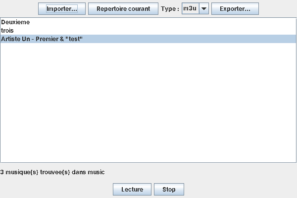
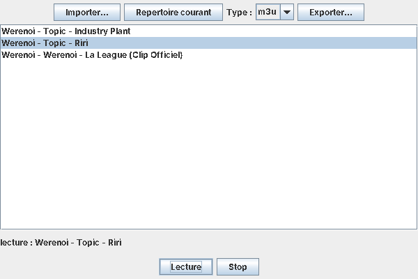
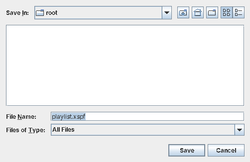
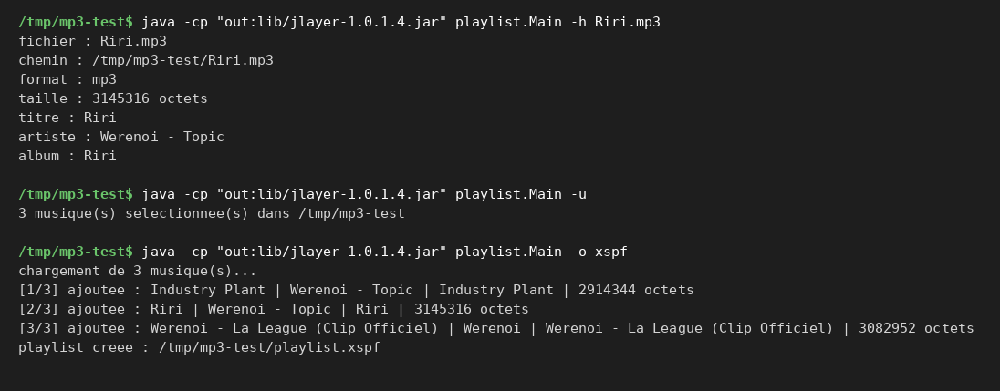
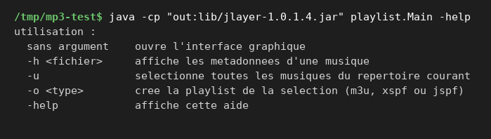

Projets / Playlists
Gestionnaire de playlists
Java, ligne de commande et Swing
- Cours
- Projet de L2, semestre 3
- Année
- 2025
- Équipe
- Projet individuel
- Statut
- Terminé
 Java
Java- Swing
- JLayer
- XML
 JSON
JSON Git
Git
L'objectif
Le but n'était pas vraiment de lire de la musique, mais de gérer des playlists : le programme prend toutes les musiques du dossier courant, on les sélectionne et on exporte la playlist en M3U, XSPF ou JSPF. Ça marche en ligne de commande et avec une interface Swing, avec une lecture simple en plus.
Les fonctionnalités
- Sélection automatique. Toutes les musiques MP3 du dossier courant sont sélectionnées et la liste est enregistrée dans selection.txt.
- Métadonnées. Le programme lit lui-même les tags ID3v2 (versions 2.3 et 2.4) et ID3v1 pour récupérer le titre, l'artiste et l'album, sans bibliothèque.
- Trois formats d'export. M3U (texte), XSPF (XML) et JSPF (JSON), chacun dans sa classe derrière une même interface Exporteur.
- Ligne de commande. -h affiche les métadonnées d'un fichier, -u fait la sélection, -o crée la playlist dans le format voulu en affichant chaque musique ajoutée, -help affiche l'aide.
- Interface Swing. Importer des fichiers, prendre le répertoire courant, choisir le type et exporter ; layouts de base, aspect par défaut.
- Lecture. Lecture et arrêt d'un MP3 avec la bibliothèque JLayer, dans un thread à part pour ne pas bloquer la fenêtre.
Un cœur, deux interfaces
Trois formats, trois fichiers
Extraits réels produits par le programme à partir des trois mêmes MP3, avec la commande -o.
#EXTM3U
#EXTINF:-1,Werenoi - Topic - Industry Plant
/tmp/mp3-test/Industry Plant.mp3
#EXTINF:-1,Werenoi - Topic - Riri
/tmp/mp3-test/Riri.mp3
#EXTINF:-1,Werenoi - Werenoi - La League (Clip Officiel)
/tmp/mp3-test/Werenoi La League Clip Officiel.mp3<?xml version="1.0" encoding="UTF-8"?>
<playlist version="1" xmlns="http://xspf.org/ns/0/">
<title>playlist</title>
<trackList>
<track>
<location>file:/tmp/mp3-test/Industry%20Plant.mp3</location>
<title>Industry Plant</title>
<creator>Werenoi - Topic</creator>
<album>Industry Plant</album>
</track>
<track>
<location>file:/tmp/mp3-test/Riri.mp3</location>
…{
"playlist": {
"title": "playlist",
"track": [
{"location": ["file:/tmp/mp3-test/Industry%20Plant.mp3"], "title": "Industry Plant", "creator": "Werenoi - Topic", "album": "Industry Plant"},
{"location": ["file:/tmp/mp3-test/Riri.mp3"], "title": "Riri", "creator": "Werenoi - Topic", "album": "Riri"},
{"location": ["file:/tmp/mp3-test/Werenoi%20La%20League%20Clip%20Officiel.mp3"], "title": "Werenoi - La League (Clip Officiel)", "creator": "Werenoi", "album": "Werenoi - La League (Clip Officiel)"}
]
}
}Captures
Captures réelles du projet. Cliquez sur une image pour l'agrandir ; flèches pour naviguer, Échap pour fermer.










Mon rôle
Projet individuel, réalisé seul.
La difficulté
Les trois formats d'export n'ont rien à voir entre eux (M3U est un simple texte, XSPF du XML, JSPF du JSON).
Ce que j'ai appris
J'ai appris à séparer le cœur du programme de l'interface pour avoir la même logique en ligne de commande et en Swing.